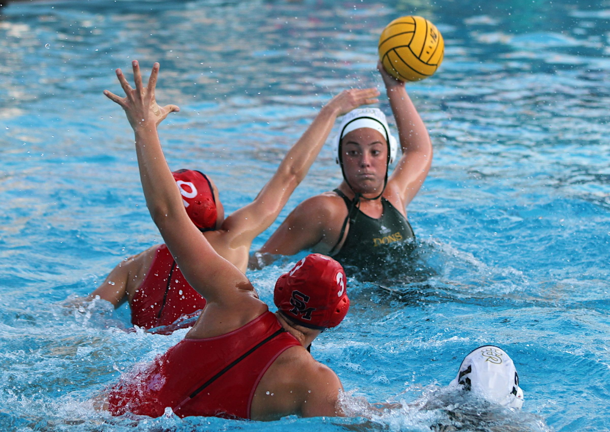

My Interests



Some of my interests are Water Polo, coding, PC building, painting, & traveling!
I'm a student at UW Madison-Wisconsin and I started getting into coding at the beginning of my sophomore year in high school when I took an AP Computer Science Principles class. I had never done anything related to coding, but I actually ended up enjoying it. In that class, we used code.org and learned a lot about the software development industry while being introduced to actual coding, including lessons on loops. Because of my interest, I started taking coding and engineering classes at school and beyond. My next goal is to keep learning more and more about programming and study it in college.
Some of my interests are Water Polo, coding, PC building, painting, & traveling!